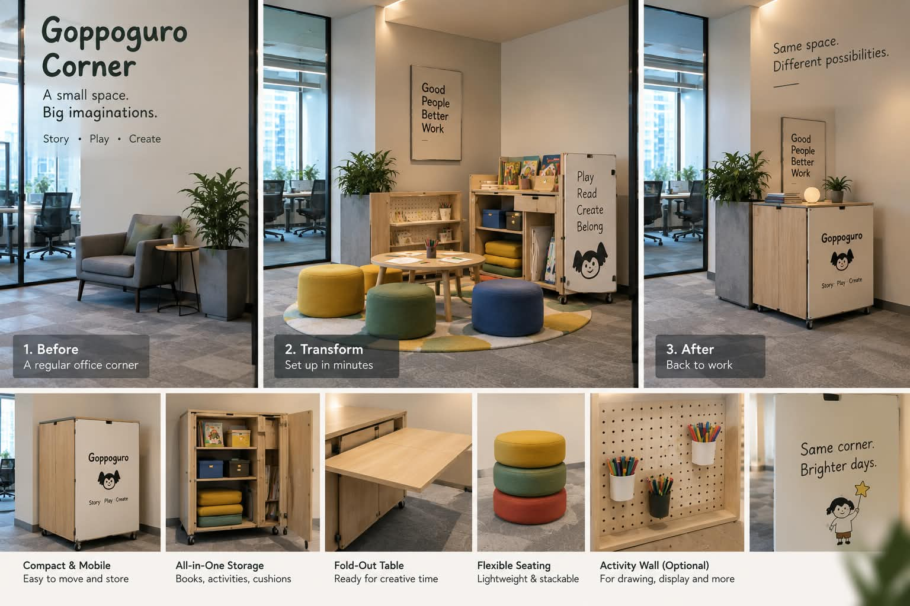
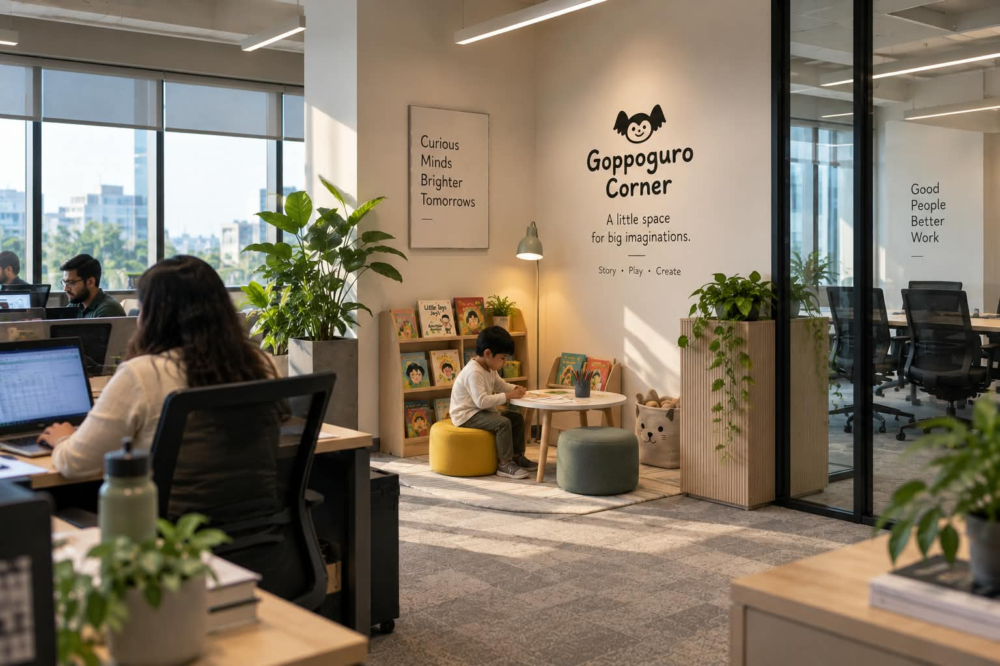
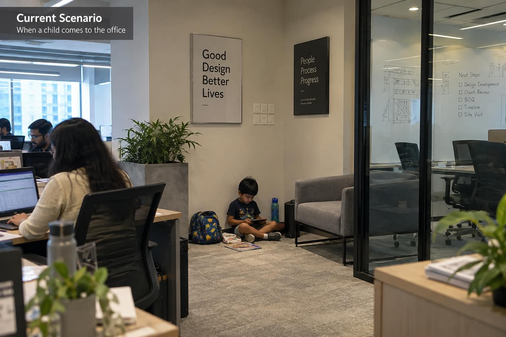
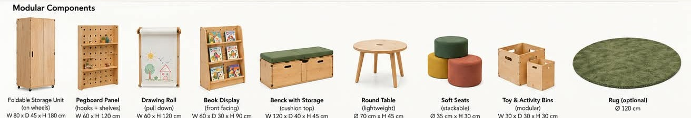
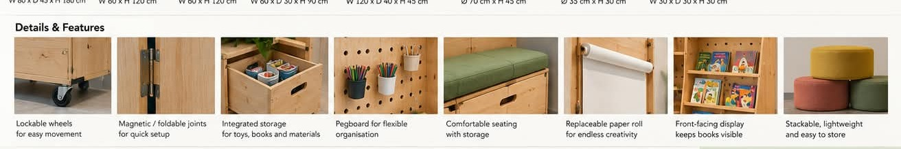
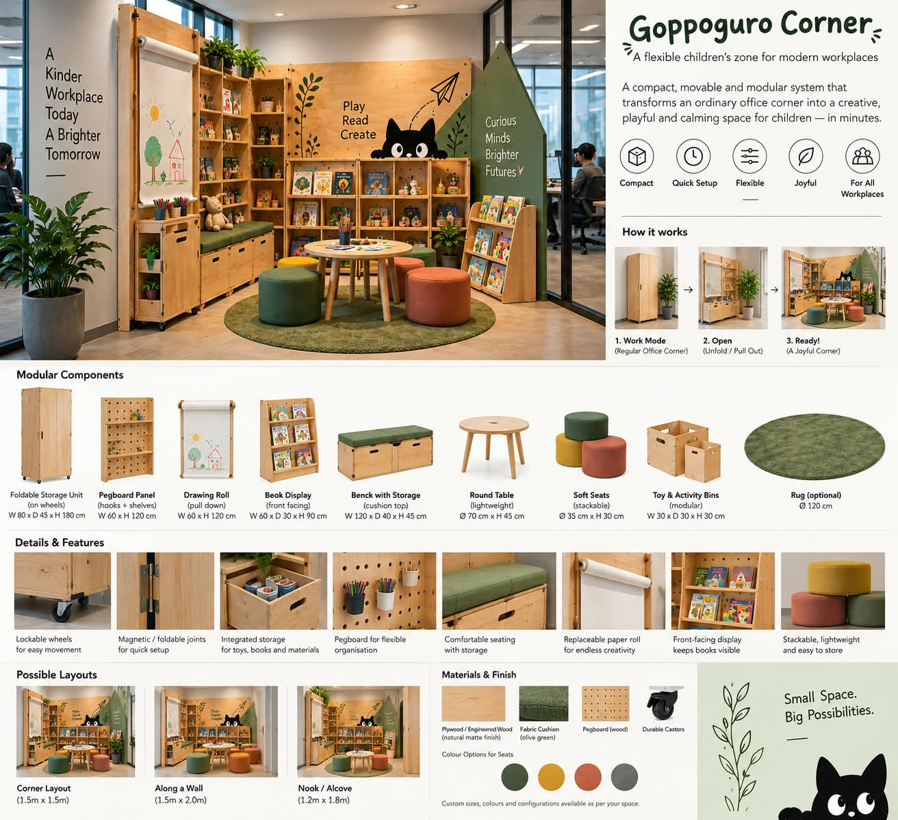
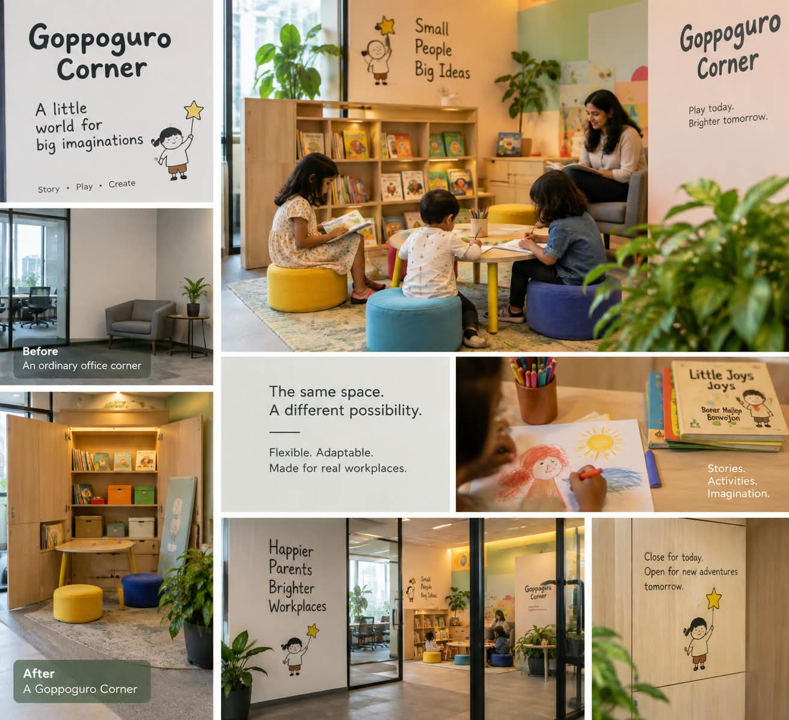
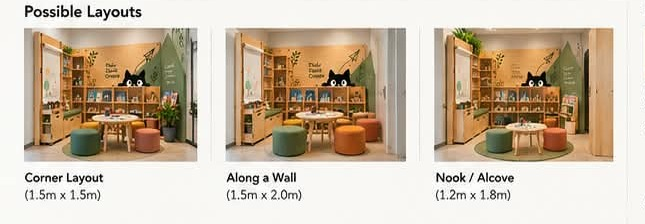
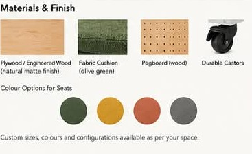
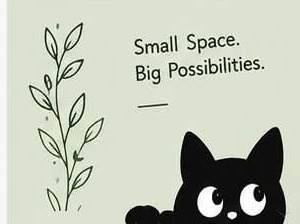

Most offices are designed almost entirely for adults. Goppoguro Corner explores a smaller, more achievable idea — an ordinary corner of an office that transforms, in minutes, into a little world for a child.

For working parents, work and parenting rarely stay in separate boxes. School holidays, sudden closures, gaps in childcare, meetings that overrun, or simply a day when a parent needs to keep their child nearby — these moments arrive without much warning. Yet most workplaces are designed almost entirely for adults. When a child does occasionally come into the office, there is rarely anywhere that belongs to them.
The usual answer is daycare, and daycare matters — particularly where childcare is needed on a regular basis. But that raises a question: does every child-friendly gesture in a workplace need to start with a full daycare facility?
At Goppoguro, we started thinking about something smaller.
What If One Corner Could Change?
Picture an ordinary corner of an office — a small lounge, a waiting area, an unused edge of the floor plan, or part of a multipurpose room. Most of the time, it simply functions as office space.
But when it's needed, within a few minutes, it transforms.

A cabinet opens. A soft rug rolls out. Small stools appear. A shelf of books becomes reachable. A table turns into a surface for drawing and making. Tucked inside the storage: paper, colours, puzzles, stories, and creative activities.
An ordinary office corner becomes, for a while, a little world for a child. This is the idea behind Goppoguro Corner.
Small Space, Quick Transition
Corporate offices work with limited, valuable floor space, and a permanently dedicated children's room isn't practical for every organisation. So rather than asking "how much space can we give to children?", the more useful question is:
“How can the space we already have become child-friendly when it's needed?”
Goppoguro Corner is built around that question — a compact, adaptable system rather than a conventional children's room.

Furniture folds, stacks, or rolls out of the way. Activities live inside organised storage. A children's work surface disappears back into a cabinet. The space changes quickly, and returns to normal office use just as quickly afterward — which means even a relatively small workplace can start thinking seriously about the needs of working parents.
Inside the corner, everything is modular — pieces are chosen and combined to fit the space available:

The details are what make daily use effortless:

Space Is Only the Beginning
A colourful corner is easy to create. A space where a child actually wants to spend meaningful time is a more interesting problem — which is why we think about Goppoguro Corner through three parts working together: Space, Activities, and Programmes.

Space creates a comfortable, safe setting for reading, resting, making and play. Activities give children something worth exploring — stories, drawing, puzzles, paper craft, building, open-ended imagination — rather than another screen. Programmes can occasionally bring the corner to life, through storytelling sessions, creative workshops, parent-child activities, or a family day at the office.
The goal isn't to recreate a classroom inside the workplace. Children already spend much of their day following instructions. Sometimes what they need is a piece of paper, an odd question, a story, a bit of cardboard — and the freedom to imagine.
Designed for Children, Useful for the Office
A core part of the idea is that the space shouldn't sit empty and useless when no children are around. Closed, a Goppoguro Corner can stay part of the everyday workplace — a small reading nook, an informal seating area, a quiet corner to sit for a moment.

That adaptability is central to the design. It's built around children, but it doesn't have to stand empty without them — which, for smaller offices especially, is what makes child-friendly design genuinely achievable.
Different Offices, Different Possibilities
There's no single solution that fits every workplace.
For a small design studio, it might be a tiny reading and drawing corner beside the main working area. For a corporate headquarters, it could grow into a larger, flexible room with distinct activity zones. For a coworking space, it might simply let a parent work nearby while their child reads or creates something close at hand. For a shared office building with several organisations under one roof, a larger Goppoguro space could even become a common facility.
In practice, the same modular system adapts to whatever footprint is available:

The scale changes. The principle doesn't:
Give children a place. Give them something meaningful to do. Keep their parents close.
Beyond Childcare
Goppoguro Corner isn't intended to replace professional daycare or supervised childcare — it addresses a different space in between: the many moments that sit between having no provision for children at all, and running a full childcare centre.
It also opens up small opportunities for connection. A parent might spend a short break drawing alongside their child. A colleague might read them a story. A visiting grandparent could sit comfortably nearby. On another day, children might simply join a Goppoguro storytelling or making session. The space belongs primarily to children — but it can gently draw the people around them a little closer too.
Towards a More Child-Friendly Workplace
Supporting working parents doesn't always have to start with a sweeping policy, a large room, or a significant investment. Sometimes it can start with one corner.
A corner that says children are welcome. A corner that lets a parent keep working while keeping their child close. A corner where waiting turns into reading, playing, making, and imagining.
At Goppoguro, we're exploring how story, play, creativity, and adaptable design can bring this idea into workplaces of every size — because a small change in space can make a meaningful difference to someone's working day.
The Corner, In Detail
For teams evaluating whether a Goppoguro Corner could fit their own office, the system is built from durable, natural materials and finished to blend into a workplace rather than stand out from it.

Every corner starts the same way and ends up different — sized, laid out, and finished around the office it lives in.

Goppoguro Corner
A little world for the child.
A more supportive workplace for working parents.
More from Publications
Slow writing on creativity, learning, and the human need for play.
All Publications